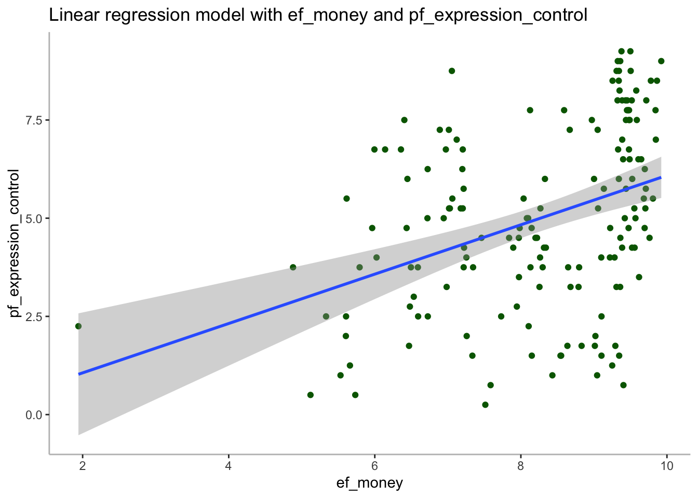

Last updated: 2021-03-09
Checks: 7 0
Knit directory: Assignment/
This reproducible R Markdown analysis was created with workflowr (version 1.6.2). The Checks tab describes the reproducibility checks that were applied when the results were created. The Past versions tab lists the development history.
Great! Since the R Markdown file has been committed to the Git repository, you know the exact version of the code that produced these results.
Great job! The global environment was empty. Objects defined in the global environment can affect the analysis in your R Markdown file in unknown ways. For reproduciblity it’s best to always run the code in an empty environment.
The command set.seed(20210309) was run prior to running the code in the R Markdown file. Setting a seed ensures that any results that rely on randomness, e.g. subsampling or permutations, are reproducible.
Great job! Recording the operating system, R version, and package versions is critical for reproducibility.
Nice! There were no cached chunks for this analysis, so you can be confident that you successfully produced the results during this run.
Great job! Using relative paths to the files within your workflowr project makes it easier to run your code on other machines.
Great! You are using Git for version control. Tracking code development and connecting the code version to the results is critical for reproducibility.
The results in this page were generated with repository version 42eec2d. See the Past versions tab to see a history of the changes made to the R Markdown and HTML files.
Note that you need to be careful to ensure that all relevant files for the analysis have been committed to Git prior to generating the results (you can use wflow_publish or wflow_git_commit). workflowr only checks the R Markdown file, but you know if there are other scripts or data files that it depends on. Below is the status of the Git repository when the results were generated:
Untracked files:
Untracked: Assignment/
Untracked: analysis/finalresults.Rmd
Untracked: analysis/myproject/
Untracked: myproject/
Unstaged changes:
Modified: finalresults.Rmd
Note that any generated files, e.g. HTML, png, CSS, etc., are not included in this status report because it is ok for generated content to have uncommitted changes.
These are the previous versions of the repository in which changes were made to the R Markdown (analysis/first-analysis.Rmd) and HTML (docs/first-analysis.html) files. If you’ve configured a remote Git repository (see ?wflow_git_remote), click on the hyperlinks in the table below to view the files as they were in that past version.
| File | Version | Author | Date | Message |
|---|---|---|---|---|
| Rmd | 42eec2d | Defnecob | 2021-03-09 | wflow_publish(“~/Desktop/R Kurs/Assignment/analysis/first-analysis.Rmd”) |
Use the hfi dataset from the openintro package
Fit a new model that uses pf_expression_control to predict hf_score, or the total human freedom score.
Again add region to the model from Q4. Compare the slope and \(R^2\) with the model from Q4.
Finally fit a model with ef_money and pf_expression_control as exposures and hf_score as outcome. Compare the slope and \(R^2\) from the models from Q1. Could ef_money be a confounder?
Use a linear regression model (and scatter plot) with ef_money as exposure and pf_expression_control as outcome, to study whether ef_money has an association with pf_expression_control as well. This might validate our finding that ef_money is a confounder between pf_expression_control as exposure and hf_score as outcome from Q6.
install.packages("openintro")
The downloaded binary packages are in
/var/folders/3d/v7t2sdj52731h3r72t57tsf00000gn/T//RtmpG1sY9f/downloaded_packageslibrary(openintro)
library(broom)
library(tidyverse)Exercise 7:
hfi_2016 <- hfi %>%
filter(year == 2016)
head(hfi_2016)# A tibble: 6 x 123
year ISO_code countries region pf_rol_procedur… pf_rol_civil pf_rol_criminal
<dbl> <chr> <chr> <chr> <dbl> <dbl> <dbl>
1 2016 ALB Albania Easter… 6.66 4.55 4.67
2 2016 DZA Algeria Middle… NA NA NA
3 2016 AGO Angola Sub-Sa… NA NA NA
4 2016 ARG Argentina Latin … 7.10 5.79 4.34
5 2016 ARM Armenia Caucas… NA NA NA
6 2016 AUS Australia Oceania 8.44 7.53 7.36
# … with 116 more variables: pf_rol <dbl>, pf_ss_homicide <dbl>,
# pf_ss_disappearances_disap <dbl>, pf_ss_disappearances_violent <dbl>,
# pf_ss_disappearances_organized <dbl>,
# pf_ss_disappearances_fatalities <dbl>, pf_ss_disappearances_injuries <dbl>,
# pf_ss_disappearances <dbl>, pf_ss_women_fgm <dbl>,
# pf_ss_women_missing <dbl>, pf_ss_women_inheritance_widows <dbl>,
# pf_ss_women_inheritance_daughters <dbl>, pf_ss_women_inheritance <dbl>,
# pf_ss_women <dbl>, pf_ss <dbl>, pf_movement_domestic <dbl>,
# pf_movement_foreign <dbl>, pf_movement_women <dbl>, pf_movement <dbl>,
# pf_religion_estop_establish <dbl>, pf_religion_estop_operate <dbl>,
# pf_religion_estop <dbl>, pf_religion_harassment <dbl>,
# pf_religion_restrictions <dbl>, pf_religion <dbl>,
# pf_association_association <dbl>, pf_association_assembly <dbl>,
# pf_association_political_establish <dbl>,
# pf_association_political_operate <dbl>, pf_association_political <dbl>,
# pf_association_prof_establish <dbl>, pf_association_prof_operate <dbl>,
# pf_association_prof <dbl>, pf_association_sport_establish <dbl>,
# pf_association_sport_operate <dbl>, pf_association_sport <dbl>,
# pf_association <dbl>, pf_expression_killed <dbl>,
# pf_expression_jailed <dbl>, pf_expression_influence <dbl>,
# pf_expression_control <dbl>, pf_expression_cable <dbl>,
# pf_expression_newspapers <dbl>, pf_expression_internet <dbl>,
# pf_expression <dbl>, pf_identity_legal <dbl>,
# pf_identity_parental_marriage <dbl>, pf_identity_parental_divorce <dbl>,
# pf_identity_parental <dbl>, pf_identity_sex_male <dbl>,
# pf_identity_sex_female <dbl>, pf_identity_sex <dbl>,
# pf_identity_divorce <dbl>, pf_identity <dbl>, pf_score <dbl>,
# pf_rank <dbl>, ef_government_consumption <dbl>,
# ef_government_transfers <dbl>, ef_government_enterprises <dbl>,
# ef_government_tax_income <dbl>, ef_government_tax_payroll <dbl>,
# ef_government_tax <dbl>, ef_government <dbl>, ef_legal_judicial <dbl>,
# ef_legal_courts <dbl>, ef_legal_protection <dbl>, ef_legal_military <dbl>,
# ef_legal_integrity <dbl>, ef_legal_enforcement <dbl>,
# ef_legal_restrictions <dbl>, ef_legal_police <dbl>, ef_legal_crime <dbl>,
# ef_legal_gender <dbl>, ef_legal <dbl>, ef_money_growth <dbl>,
# ef_money_sd <dbl>, ef_money_inflation <dbl>, ef_money_currency <dbl>,
# ef_money <dbl>, ef_trade_tariffs_revenue <dbl>,
# ef_trade_tariffs_mean <dbl>, ef_trade_tariffs_sd <dbl>,
# ef_trade_tariffs <dbl>, ef_trade_regulatory_nontariff <dbl>,
# ef_trade_regulatory_compliance <dbl>, ef_trade_regulatory <dbl>,
# ef_trade_black <dbl>, ef_trade_movement_foreign <dbl>,
# ef_trade_movement_capital <dbl>, ef_trade_movement_visit <dbl>,
# ef_trade_movement <dbl>, ef_trade <dbl>,
# ef_regulation_credit_ownership <dbl>, ef_regulation_credit_private <dbl>,
# ef_regulation_credit_interest <dbl>, ef_regulation_credit <dbl>,
# ef_regulation_labor_minwage <dbl>, ef_regulation_labor_firing <dbl>,
# ef_regulation_labor_bargain <dbl>, ef_regulation_labor_hours <dbl>, …Exercise 8:
model1 <- lm(hf_score ~ pf_expression_control, data = hfi_2016)
tidy(model1) # A tibble: 2 x 5
term estimate std.error statistic p.value
<chr> <dbl> <dbl> <dbl> <dbl>
1 (Intercept) 5.05 0.123 41.1 5.97e-87
2 pf_expression_control 0.368 0.0224 16.5 2.73e-36summarise(hfi_2016, correlation_hf_pf = cor(pf_expression_control, hf_score))# A tibble: 1 x 1
correlation_hf_pf
<dbl>
1 0.793#Tells us that the correlation between expression_control and human freedom is 0.7931748
#And that the intercept estimate is 5.053396 and the slope is 0.368432, this suggests that for every increase in pf_expression_control per unit, the human freedom increases by 0.368432slope1 <- model1$coefficients["pf_expression_control"]
slope1pf_expression_control
0.368432 Exercise 9:
model2<- lm(hf_score ~ pf_expression_control + region, data = hfi_2016)
tidy(model2) # A tibble: 11 x 5
term estimate std.error statistic p.value
<chr> <dbl> <dbl> <dbl> <dbl>
1 (Intercept) 6.05 0.235 25.7 5.19e-57
2 pf_expression_control 0.275 0.0258 10.6 4.80e-20
3 regionEast Asia 0.241 0.328 0.732 4.65e- 1
4 regionEastern Europe -0.102 0.267 -0.381 7.04e- 1
5 regionLatin America & the Caribbean -0.567 0.260 -2.18 3.08e- 2
6 regionMiddle East & North Africa -1.06 0.259 -4.10 6.80e- 5
7 regionNorth America 0.330 0.469 0.704 4.82e- 1
8 regionOceania -0.131 0.375 -0.350 7.27e- 1
9 regionSouth Asia -0.627 0.264 -2.37 1.88e- 2
10 regionSub-Saharan Africa -0.972 0.245 -3.97 1.12e- 4
11 regionWestern Europe 0.0487 0.298 0.163 8.71e- 1the slope between human freedom and expression control decreased to 0.27471091 in comparison to 0.368432 in the previous model without regions, so that the finluence of pf_expression control also decreased
slope2 <- model2$coefficients["pf_expression_control"]
slope2pf_expression_control
0.2747109 glance(model1) # A tibble: 1 x 12
r.squared adj.r.squared sigma statistic p.value df logLik AIC BIC
<dbl> <dbl> <dbl> <dbl> <dbl> <dbl> <dbl> <dbl> <dbl>
1 0.629 0.627 0.660 271. 2.73e-36 1 -161. 329. 338.
# … with 3 more variables: deviance <dbl>, df.residual <int>, nobs <int>rsquared1 <- summary(model1)$r.squared
rsquared1 [1] 0.6291262glance(model2) # A tibble: 1 x 12
r.squared adj.r.squared sigma statistic p.value df logLik AIC BIC
<dbl> <dbl> <dbl> <dbl> <dbl> <dbl> <dbl> <dbl> <dbl>
1 0.754 0.738 0.552 46.4 4.52e-41 10 -128. 280. 317.
# … with 3 more variables: deviance <dbl>, df.residual <int>, nobs <int>rsquared2 <- summary(model2)$r.squared
rsquared2[1] 0.7544951the r.squared with the model1 is 0.6291262 and with the model2 including region is 0.7544951 so the r.squared value is increasing in the second model suggesting more variability in the hf score
Exercsie 10:
model3 <- lm(hf_score ~ ef_money, data = hfi_2016)
model4<- lm(hf_score ~ pf_expression_control + ef_money, data = hfi_2016)tidy(model3)# A tibble: 2 x 5
term estimate std.error statistic p.value
<chr> <dbl> <dbl> <dbl> <dbl>
1 (Intercept) 2.74 0.387 7.07 4.56e-11
2 ef_money 0.504 0.0463 10.9 5.50e-21glance(model3)# A tibble: 1 x 12
r.squared adj.r.squared sigma statistic p.value df logLik AIC BIC
<dbl> <dbl> <dbl> <dbl> <dbl> <dbl> <dbl> <dbl> <dbl>
1 0.425 0.422 0.821 118. 5.50e-21 1 -197. 400. 409.
# … with 3 more variables: deviance <dbl>, df.residual <int>, nobs <int>tidy(model4)# A tibble: 3 x 5
term estimate std.error statistic p.value
<chr> <dbl> <dbl> <dbl> <dbl>
1 (Intercept) 2.79 0.244 11.5 1.38e-22
2 pf_expression_control 0.296 0.0189 15.7 4.68e-34
3 ef_money 0.318 0.0315 10.1 7.74e-19glance(model4)# A tibble: 1 x 12
r.squared adj.r.squared sigma statistic p.value df logLik AIC BIC
<dbl> <dbl> <dbl> <dbl> <dbl> <dbl> <dbl> <dbl> <dbl>
1 0.774 0.771 0.516 272. 4.38e-52 2 -121. 251. 263.
# … with 3 more variables: deviance <dbl>, df.residual <int>, nobs <int>slope3 <- model3$coefficients["ef_money"]
slope3 ef_money
0.5038764 slope4 <- model4$coefficients["ef_money"]
slope4 ef_money
0.3177051 rsquared3 <- summary(model3)$r.squared
rsquared3[1] 0.4252422rsquared4 <- summary(model4)$r.squared
rsquared4[1] 0.7740638From comparing slope3 and slope4 one can tell that the additional exposure to hf_score and ef_money leads to an decrease in the ef_money slope from 0.504 to 0.352
When looking at the rsquared value: it increase from 0.425 to 0.756 indicating that ef_money can be a confounder
-> for identifying cofounders, a change in percentage of from one model to the other is required to be > 10% which is the case here, thus suggesting ef_money being a confounder
In general, when combining the variables the variance doesn’t increase as much as expected
Exercise 11:
#for model5: pf_expression control as outcome, ef_money as exposures
model5 <- lm(pf_expression_control ~ ef_money + region, data = hfi_2016)
summary(model5)
Call:
lm(formula = pf_expression_control ~ ef_money + region, data = hfi_2016)
Residuals:
Min 1Q Median 3Q Max
-4.4657 -0.9607 0.0183 1.0914 3.2730
Coefficients:
Estimate Std. Error t value Pr(>|t|)
(Intercept) -0.6623 1.1658 -0.568 0.570811
ef_money 0.3721 0.1069 3.480 0.000656 ***
regionEast Asia 2.8339 0.9678 2.928 0.003938 **
regionEastern Europe 3.2402 0.7708 4.204 4.48e-05 ***
regionLatin America & the Caribbean 2.9607 0.7609 3.891 0.000149 ***
regionMiddle East & North Africa 0.3912 0.7862 0.498 0.619549
regionNorth America 4.6724 1.3693 3.412 0.000827 ***
regionOceania 4.8369 1.0843 4.461 1.59e-05 ***
regionSouth Asia 1.5715 0.8029 1.957 0.052145 .
regionSub-Saharan Africa 2.1917 0.7443 2.945 0.003745 **
regionWestern Europe 5.4289 0.7907 6.866 1.61e-10 ***
---
Signif. codes: 0 '***' 0.001 '**' 0.01 '*' 0.05 '.' 0.1 ' ' 1
Residual standard error: 1.673 on 151 degrees of freedom
Multiple R-squared: 0.514, Adjusted R-squared: 0.4818
F-statistic: 15.97 on 10 and 151 DF, p-value: < 2.2e-16tidy(model5)# A tibble: 11 x 5
term estimate std.error statistic p.value
<chr> <dbl> <dbl> <dbl> <dbl>
1 (Intercept) -0.662 1.17 -0.568 5.71e- 1
2 ef_money 0.372 0.107 3.48 6.56e- 4
3 regionEast Asia 2.83 0.968 2.93 3.94e- 3
4 regionEastern Europe 3.24 0.771 4.20 4.48e- 5
5 regionLatin America & the Caribbean 2.96 0.761 3.89 1.49e- 4
6 regionMiddle East & North Africa 0.391 0.786 0.498 6.20e- 1
7 regionNorth America 4.67 1.37 3.41 8.27e- 4
8 regionOceania 4.84 1.08 4.46 1.59e- 5
9 regionSouth Asia 1.57 0.803 1.96 5.21e- 2
10 regionSub-Saharan Africa 2.19 0.744 2.94 3.74e- 3
11 regionWestern Europe 5.43 0.791 6.87 1.61e-10ggplot(data = hfi_2016, aes(x = ef_money, y = pf_expression_control))+
geom_point(colour="darkgreen") +
ggtitle(label="Linear regression model with ef_money and pf_expression_control")+
geom_smooth(method = "lm")+
theme(
panel.border = element_blank(),
panel.grid.major = element_blank(),
panel.grid.minor = element_blank(),
panel.background=element_blank(),
axis.line = element_line(colour = "grey")
)`geom_smooth()` using formula 'y ~ x'
This scatterplot shows that ef_money is a confounder between pf_expression_control as exposure and hf_score as outcome.
sessionInfo()R version 4.0.3 (2020-10-10)
Platform: x86_64-apple-darwin17.0 (64-bit)
Running under: macOS Catalina 10.15.4
Matrix products: default
BLAS: /Library/Frameworks/R.framework/Versions/4.0/Resources/lib/libRblas.dylib
LAPACK: /Library/Frameworks/R.framework/Versions/4.0/Resources/lib/libRlapack.dylib
locale:
[1] de_DE.UTF-8/de_DE.UTF-8/de_DE.UTF-8/C/de_DE.UTF-8/de_DE.UTF-8
attached base packages:
[1] stats graphics grDevices utils datasets methods base
other attached packages:
[1] forcats_0.5.1 stringr_1.4.0 dplyr_1.0.5
[4] purrr_0.3.4 readr_1.4.0 tidyr_1.1.3
[7] tibble_3.1.0 ggplot2_3.3.3 tidyverse_1.3.0
[10] broom_0.7.4 openintro_2.0.0 usdata_0.1.0
[13] cherryblossom_0.1.0 airports_0.1.0
loaded via a namespace (and not attached):
[1] Rcpp_1.0.6 lattice_0.20-41 lubridate_1.7.9.2 assertthat_0.2.1
[5] rprojroot_2.0.2 digest_0.6.27 utf8_1.1.4 R6_2.5.0
[9] cellranger_1.1.0 backports_1.2.1 reprex_1.0.0 evaluate_0.14
[13] highr_0.8 httr_1.4.2 pillar_1.5.1 rlang_0.4.10
[17] readxl_1.3.1 rstudioapi_0.13 whisker_0.4 Matrix_1.2-18
[21] rmarkdown_2.6 labeling_0.4.2 splines_4.0.3 munsell_0.5.0
[25] compiler_4.0.3 httpuv_1.5.5 modelr_0.1.8 xfun_0.20
[29] pkgconfig_2.0.3 mgcv_1.8-33 htmltools_0.5.1.1 tidyselect_1.1.0
[33] workflowr_1.6.2 fansi_0.4.2 withr_2.4.1 crayon_1.4.1
[37] dbplyr_2.1.0 later_1.1.0.1 grid_4.0.3 nlme_3.1-149
[41] jsonlite_1.7.2 gtable_0.3.0 lifecycle_1.0.0 DBI_1.1.1
[45] git2r_0.28.0 magrittr_2.0.1 scales_1.1.1 cli_2.3.1
[49] stringi_1.5.3 farver_2.1.0 fs_1.5.0 promises_1.1.1
[53] xml2_1.3.2 ellipsis_0.3.1 generics_0.1.0 vctrs_0.3.6
[57] tools_4.0.3 glue_1.4.2 hms_1.0.0 yaml_2.2.1
[61] colorspace_2.0-0 rvest_0.3.6 knitr_1.31 haven_2.3.1